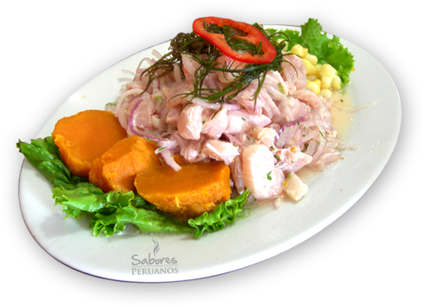

CEVICHE

Description
In Peru, ceviche or ceviche is considered by its population as part of the national identity of this country.
Ingredients
- 1 pinch of pepper
- 1 kilogram of fish of your choice
- 1 onion cut into julienne strips
- ¼ cup chopped cilantro leaf
- 1 chopped yellow chili
- 1 chopped limo chili (to decorate)
- 12 lemons
- 1 pinch of salt and pepper
- 1 cup of fish broth
- 1 parboiled sweet corn
- 1 parboiled sweet potato
- 1 bunch of lettuce leaves
Steps
- The first thing you should do to make the easy Peruvian ceviche recipe is to squeeze the 12 lemons to extract their juice, reserve it for later. Then, cut the fish into pieces of approximately 3 centimeters. Place the pieces in the container you are going to use to serve the dish.
- Mix the fish with the chopped yellow chili, fish broth and cilantro. Also place the onion cut into julienne strips and the crushed garlic. Let it rest for a few minutes so that it marinates well and soaks up all the flavors.
- Salt and pepper to taste and place the parboiled sweet potato, lettuce and boiled sweet corn on one side of the plate.
- Then, pour the lemon juice all over the plate so that everything is well covered. Finally, cut a sheet of red limo chili pepper and place it as decoration. Keep it in the refrigerator to cool, since this is a dish that is served cold. Peruvian ceviche is a dish that acts as an appetizer, so you can accompany it with rice with shrimp or a delicious salmon with shrimp sauce. Ready to eat!

Visit our other recipes on our page